Chương 3 — Đặc điểm giải phẫu của não bộ
CHƯƠNG 3
Đặc điểm Giải phẫu của Não bộ
Yoga và thiền định kích hoạt các vùng khác nhau của não bộ. Một khối lượng lớn nghiên cứu đã tập trung vào việc đo lường sự khác biệt về mặt vật lý trong não bộ của những người tập yoga so với nhóm đối chứng. Chương này sẽ khám phá cấu trúc vật lý của não bộ, các vùng chính cũng như các chức năng cơ bản của chúng.
GIỚI THIỆU
Não bộ con người là một cấu trúc thống nhất, có sự liên kết chặt chẽ. Mặc dù phần lớn hoạt động như một hệ thống duy nhất, về mặt giải phẫu, não có thể được chia thành hai bán cầu trung tâm được nối với nhau bởi một bó sợi thần kinh lớn gọi là thể chai (corpus callosum). Mỗi bán cầu não cũng có thể được chia thành bốn đơn vị chính hay còn gọi là các thùy. Bốn thùy này có nhiều chức năng khác nhau và phối hợp hoạt động như một mạng lưới gắn kết (Hình 3.1).
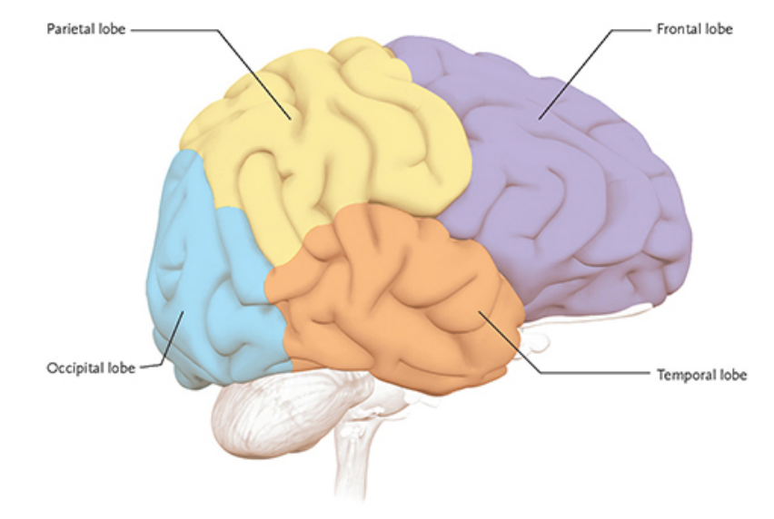
Hình 3.1 Não bộ với bốn thùy chính.
THÙY TRÁN
Thùy trán nằm ở phía trước của não bộ (đúng như tên gọi), ngay phía sau trán và mắt. Nó chịu trách nhiệm cho nhiều nhiệm vụ quan trọng, chẳng hạn như tích hợp thông tin để đưa ra quyết định. Việc quyết định tham gia lớp học yoga nào hay thậm chí nhấc chân nào lên trong tư thế chó úp mặt đều có sự tham gia của thùy trán. Thùy trán cũng liên quan đến động lực, sự chú ý, phần thưởng, khả năng tự kiểm soát, xử lý cảm xúc, tính cách và vận động (Chayer và Freedman, 2001).
Nhưng làm thế nào các nhà khoa học thần kinh biết được vùng não nào chịu trách nhiệm cho chức năng gì? Trước khi phát minh ra kỹ thuật chẩn đoán hình ảnh thần kinh, não bộ con người rất khó nghiên cứu vì nó được bao bọc trong hộp sọ cứng. Các nhà khoa học phải quan sát xem điều gì xảy ra với não bộ khi một vùng nào đó bị tổn thương hoặc phá hủy, chẳng hạn như sau một cơn đột quỵ hoặc chấn thương. Đây chính xác là cách các nhà khoa học và bác sĩ vào giữa những năm 1800 đã phát hiện ra rằng thùy trán tạo nên tính cách của chúng ta.
Phineas Gage Vào cuối những năm 1840, một công nhân đường sắt tên là Phineas Gage đang cho nổ đá để làm đường ray ở Vermont thì một tai nạn xảy ra. Một trong những vụ nổ đã phóng một thanh sắt có đường kính gần 5 cm (2 inch) xuyên qua phía trước má trái của Gage, đi thẳng qua thùy trán của ông (Hình 3.2). Gage bị hất văng xuống đất, nhưng ông không chết. Trước sự kinh ngạc của các đồng nghiệp, Gage có thể ngồi dậy và nói chuyện chỉ vài phút sau vụ tai nạn. Việc ông sống sót được tuyên bố là một phép màu y học.
Sau chấn thương, Gage quay trở lại với các hoạt động thường ngày, nhưng theo thời gian, tính cách của ông bắt đầu thay đổi. Từ một người đàn ông đáng tin cậy và chăm chỉ, ông trở nên cáu kỉnh và hung hăng hơn qua từng năm. Gia đình và bạn bè cho biết ông không còn là con người như trước đây nữa. Gage đã được nhiều bác sĩ thăm khám, và họ suy luận rằng thùy trán hẳn phải có vai trò liên quan đến tính cách. Bất chấp những thay đổi này cùng lỗ hổng trong não, Gage vẫn sống thêm 12 năm nữa trước khi qua đời vào năm 1860.
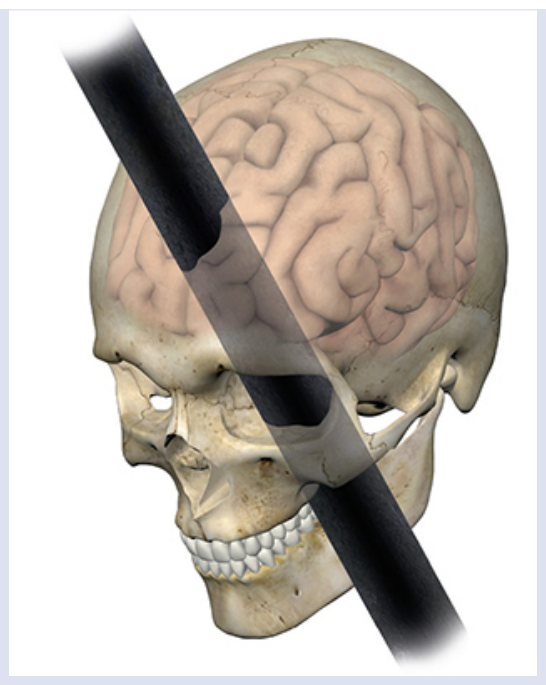
Hình 3.2 Hình ảnh mô phỏng thanh sắt đã bắn xuyên qua hộp sọ của Gage.
Nguồn: Ratiu và cộng sự, CC BY-SA 2.1. Từ: https://qbi.uq.edu.au/brain/brain-anatomy/lobes brain
Sau này, với sự ra đời của kỹ thuật chẩn đoán hình ảnh thần kinh, các nhà khoa học đã xác nhận rằng tổn thương thùy trán có thể dẫn đến những thay đổi về tính cách và các rối loạn nhân cách (Chow, 2000). Sau khi Gage qua đời, một bác sĩ đã giữ hộp sọ của ông và cuối cùng hiến tặng hộp sọ cùng thanh sắt cho Bảo tàng Giải phẫu Warren của Đại học Harvard ở Boston, Massachusetts. Chúng vẫn được lưu giữ tại đó cho đến ngày nay.
Ở phần trước phía dưới của thùy trán là vỏ não trước trán (prefrontal cortex). Vùng này tham gia vào quá trình kiểm soát nhận thức, ra quyết định, chú ý và hành vi. Vỏ não trước trán là một trong những vùng não được nghiên cứu nhiều nhất, bao gồm cả trong các nghiên cứu về yoga và thiền định.
Vỏ não trước trán thường gắn liền với việc thực hành yoga. Các nhà nghiên cứu từ Bệnh viện Israelita Albert Einstein ở Brazil và Đại học Harvard
phát hiện ra rằng những phụ nữ lớn tuổi khỏe mạnh có kinh nghiệm tập yoga lâu năm có độ dày vỏ não ở vỏ não trước trán bên trái tăng lên khi so sánh với nhóm đối chứng trẻ tuổi hơn có mức độ hoạt động tương đương (Afonso và cộng sự, 2017). Độ dày vỏ não phản ánh bề rộng của chất xám ở vỏ não, phần ngoài cùng của não người (Hình 3.3). Vỏ não dày hơn có thể đồng nghĩa với việc có nhiều tế bào thần kinh khỏe mạnh hơn ở những vùng đó. Ngược lại, vỏ não mỏng đi là dấu hiệu của sự thoái hóa thần kinh trong một số bệnh, chẳng hạn như bệnh Alzheimer (Lerch và cộng sự, 2004).
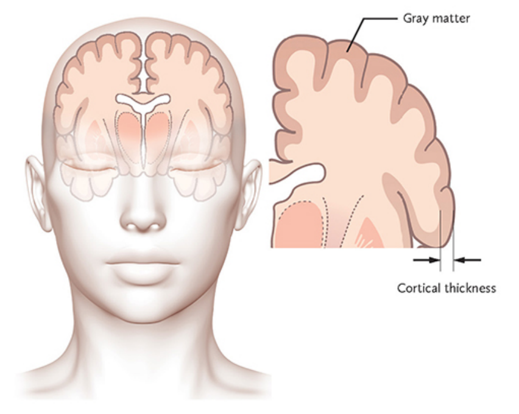
Hình 3.3 Hình minh họa cách các nhà khoa học đo độ dày vỏ não.
Độ dày vỏ não lớn hơn ở vỏ não trước trán của những người tập yoga lâu năm cho thấy yoga có thể tác động đến kích thước của vùng não quan trọng này. Những thay đổi về mặt giải phẫu này có thể dẫn đến các lợi ích về chức năng như cải thiện nhận thức, khả năng ra quyết định hoặc kiểm soát xung động, mặc dù sự gia tăng kích thước đơn thuần không nhất thiết đồng nghĩa với việc các quá trình xử lý được cải thiện.
Chất xám và chất trắng
Các nhà khoa học thần kinh thường đề cập đến não bộ như một cấu trúc gồm chất xám và chất trắng. Chất xám chứa chủ yếu thân tế bào của các tế bào thần kinh (neuron) và các sợi nhánh (dendrite) của chúng, cũng như các tế bào thần kinh đệm (glial cell) và mao mạch. Các mao mạch mang máu giàu oxy đến các tế bào, khiến mô này có màu hơi hồng trong bộ não sống. Chất xám nằm ở các lớp ngoài của não bộ và ở phần trung tâm của tủy sống.
Chất trắng có màu trắng và chứa chủ yếu các sợi trục thần kinh (axon), là những dây dài vươn ra từ thân tế bào. Sợi trục có màu trắng là do bao myelin quấn quanh chúng. Myelin giúp dẫn truyền các xung tín hiệu điện dọc theo sợi trục đến vùng đầu tận cùng của tế bào để giao tiếp với các tế bào khác. Trong não bộ, chất trắng nằm ở phía trong chất xám, nhưng trong tủy sống, chất trắng lại nằm ở phía ngoài chất xám.
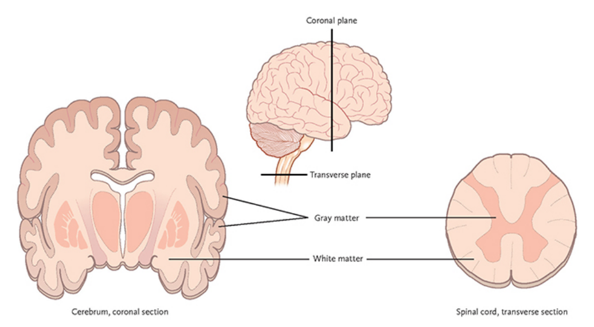
Hình 3.4 Bên trái: Mặt cắt của não bộ cho thấy chất xám ở bên ngoài và chất trắng ở bên trong. Bên phải: Mặt cắt của tủy sống cho thấy chất xám ở bên trong và chất trắng ở bên ngoài.
THÙY THÁI DƯƠNG
Thùy thái dương nằm ở cả hai bên não bộ, phía trong hai tai. Nó tham gia vào nhiều hoạt động khác nhau bao gồm nghe, lắng nghe, ngôn ngữ, xử lý thị giác đối với khuôn mặt và đồ vật cũng như trí nhớ (Squire, Stark và Clark, 2004; Eichenbaum, Yonelinas và Ranganath, 2007). Mặc dù các cấu trúc quan trọng thường nằm đối xứng ở cả hai bên não, thùy thái dương là một ngoại lệ.
Thùy thái dương trái là nơi chứa hai cấu trúc quan trọng liên quan đến ngôn ngữ gọi là vùng Wernicke và vùng Broca, những vùng không có ở bên phải. Vùng Wernicke chịu trách nhiệm hiểu lời nói, trong khi vùng Broca tham gia vào quá trình tạo ra lời nói. Ví dụ, khi giáo viên yoga của bạn hướng dẫn bằng lời nói, việc hiểu các hướng dẫn đó đòi hỏi sự kích hoạt của vùng Wernicke. Việc đặt câu hỏi trong lớp học sử dụng vùng Broca để kết hợp các từ ngữ thành lời nói. Có một ngoại lệ: những người thuận tay trái có nhiều khả năng có các trung tâm ngôn ngữ nằm ở bên phải não thay vì bên trái. Các nhà khoa học thần kinh vẫn chưa hoàn toàn chắc chắn tại sao lại như vậy (Knecht và cộng sự, 2000). Thùy thái dương cũng tham gia vào việc nhận diện khuôn mặt. Nhà khoa học thần kinh Oliver Sacks đã viết một cuốn sách tựa đề The Man Who Mistook His Wife for a Hat (Người đàn ông nhầm vợ mình với chiếc mũ), mô tả một tình trạng hiếm gặp gọi là chứng mất nhận diện khuôn mặt hay mù mặt (prosopagnosia) (Sacks, 2022). Những người mắc chứng này không thể nhận ra khuôn mặt, và người ta cho rằng hiện tượng này có thể do tổn thương ở thùy thái dương. Một nhóm các nhà khoa học tại Đại học Dartmouth, Đại học Harvard và Đại học London hiện đang tiến hành một nghiên cứu quy mô lớn thuộc Trung tâm Nghiên cứu Prosopagnosia để hiểu rõ hơn nguyên nhân gây ra hiện tượng này. Họ tin rằng tình trạng này có thể do sự chết tế bào ở thùy thái dương, mặc dù có khả năng cũng có yếu tố di truyền liên quan.
Thùy thái dương cũng là trung tâm trí nhớ chính của não bộ. Nó chứa hồi hải mã (hippocampus), có hình dạng giống con cá ngựa (Hình 3.5). Vùng này chịu trách nhiệm cho trí nhớ tường thuật (declarative memory), tức là trí nhớ về các sự kiện và dữ kiện. Một số nhà khoa học thần kinh tin rằng vùng này có thể tạo ra các tế bào thần kinh mới thông qua một quá trình gọi là sinh thần kinh (neurogenesis) (Squire, Stark và Clark, 2004;
Eichenbaum, Yonelinas và Ranganath, 2007). Chúng ta sẽ tìm hiểu thêm về quá trình sinh thần kinh ở Chương 10.
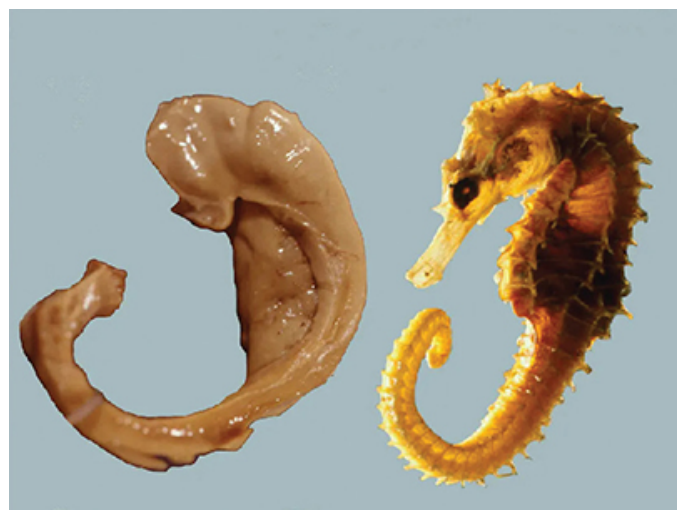
Hình 3.5 Bên trái: Hồi hải mã từ não người. Bên phải: Con cá ngựa có hình dạng giống hồi hải mã, đó là nguồn gốc tên gọi của cấu trúc này.
Nguồn: Giáo sư Laszlo Seress, CC BY-SA 3.0. Từ: https://theconversation.com/explainer-what happens-in-the-hippocampus-32589
Chức năng của hồi hải mã được phát hiện nhờ một bệnh nhân nổi tiếng tên là Henry Molaison (sau này được biết đến với tên H.M.). Vào đầu những năm 1950, Henry khi đó 26 tuổi đã trải qua một cuộc phẫu thuật não để cắt bỏ phần lớn cả hai hồi hải mã nhằm kiểm soát các cơn động kinh. Mặc dù cuộc phẫu thuật giúp giảm các cơn co giật, trí nhớ của ông đã bị thay đổi vĩnh viễn. Ông mắc phải chứng gọi là mất trí nhớ thuận chiều (anterograde amnesia). Tương tự như nhân vật Lucy Whitmore trong phim 50 First Dates (50 lần hẹn đầu tiên), Henry có thể nhớ thời thơ ấu và hầu hết cuộc đời mình, nhưng ông không thể hình thành bất kỳ ký ức mới nào.
Các bác sĩ vô cùng kinh ngạc trước trường hợp của Henry. Ông đã trải qua nhiều cuộc kiểm tra thần kinh và tâm lý chuyên sâu trong suốt cuộc đời sau ca phẫu thuật. Những nghiên cứu này đã dẫn đến sự hiểu biết sâu sắc hơn về phẫu thuật thần kinh và cho phép các nhà khoa học khám phá ra vai trò quan trọng của hồi hải mã trong việc hình thành trí nhớ.
Henry sống phần đời còn lại trong bệnh viện, thức dậy mỗi ngày với suy nghĩ mình vẫn là một chàng trai trẻ cho đến khi qua đời ở tuổi 82 vào năm 2008 (Annese và cộng sự, 2014). Vì không thể hình thành ký ức mới, ông chưa bao giờ biết mình đã trở nên nổi tiếng như thế nào trong lĩnh vực khoa học thần kinh. Sau khi ông qua đời, các nhà nghiên cứu tại Đại học California, San Diego đã lấy não của Henry và tái tạo kỹ thuật số để các nhà khoa học thần kinh trên khắp thế giới có thể kiểm tra bộ não của ông một cách chi tiết đáng kinh ngạc (Annese và cộng sự, 2014).
Làm thế nào bạn nhớ được chuỗi Chào Mặt Trời?
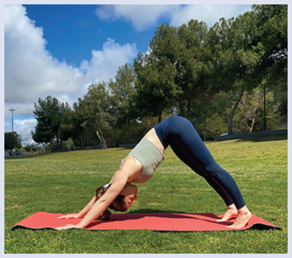
Hình 3.6 Tư thế chó úp mặt, một trong nhiều tư thế trong chuỗi Chào Mặt Trời.
Có hai loại trí nhớ dài hạn chính: trí nhớ tường thuật (trí nhớ rõ ràng/explicit memory) và trí nhớ không tường thuật (trí nhớ ẩn tàng/implicit memory). Trí nhớ tường thuật là cách chúng ta ghi nhớ các dữ kiện và sự kiện, trong khi trí nhớ không tường thuật dành cho việc hình thành thói quen và học các kỹ năng mới (Reber, 2008). Trường hợp của Henry Molaison đã dạy cho các bác sĩ và nhà khoa học rằng trí nhớ tường thuật có sự tham gia của hồi hải mã.
Trí nhớ không tường thuật, như việc thực hành chuỗi Chào Mặt Trời, có thể hoạt động mà không cần suy nghĩ có ý thức một khi đã được học thuộc. Những loại trí nhớ này đòi hỏi sự lặp đi lặp lại và thực hành để hành vi của chúng ta (chuỗi Chào Mặt Trời) vận hành ở chế độ tự động. Trí nhớ không tường thuật liên quan đến các vùng vận động của não bộ, và tiểu não đóng vai trò then chốt trong việc thực hiện các ký ức vận động đã học.
Hồi hải mã bị ảnh hưởng bởi quá trình lão hóa. Khi một người già đi, các tế bào thần kinh chết dần, tình trạng viêm tăng lên và hồi hải mã bị thu nhỏ kích thước (Van Aalst và cộng sự, 2020). Yoga có thể giúp bảo vệ não khỏi sự suy giảm liên quan đến tuổi tác. Các nhà khoa học từ Đại học Illinois tại Urbana-Champaign và Đại học Bang Wayne đã kiểm tra mật độ hồi hải mã ở 13 người tập yoga lâu năm so với 13 người khỏe mạnh thuộc nhóm đối chứng (Gothe và cộng sự, 2018). Họ phát hiện ra rằng những người tập yoga lâu năm có mật độ chất xám ở hồi hải mã bên trái cao hơn so với nhóm đối chứng. Phát hiện này có thể chỉ ra rằng những người tập yoga có nhiều tế bào thần kinh hơn ở vùng não này, giúp bảo vệ họ chống lại sự suy giảm trí nhớ do tuổi tác.
Tại sao các nghiên cứu này chỉ cho thấy sự khác biệt ở bên trái não chứ không phải bên phải? Các nhà khoa học thần kinh không biết chắc. Một phát hiện có ý nghĩa thống kê chỉ ở một bên não có thể do nhiều nguyên nhân bao gồm khó khăn kỹ thuật, sai số hoặc sự khác biệt trong kỹ thuật phân tích. Mặc dù một số chức năng, như ngôn ngữ, khu trú ở bên trái não, hầu hết các chức năng khác được cho là diễn ra ở cả hai bên não. Tuy nhiên, có khả năng vẫn tồn tại những khác biệt giữa não phải và não trái mà chúng ta chưa khám phá ra.
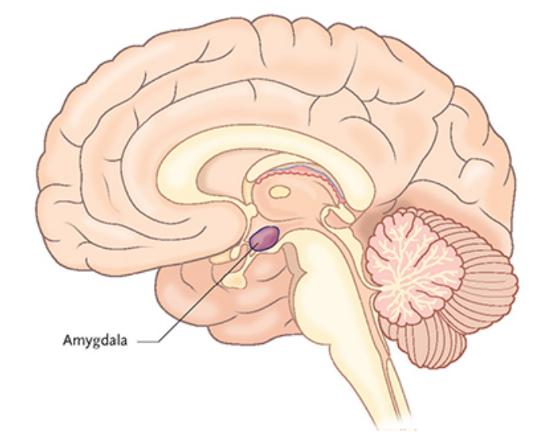
Hình 3.7 Hình minh họa não bộ cho thấy hạch hạnh nhân (amygdala).
Hồi hải mã nằm ngay cạnh hạch hạnh nhân (amygdala) (Hình 3.7). Mỗi hạch hạnh nhân có hình dạng và kích thước đại khái bằng một hạt hạnh nhân. Dù nhỏ bé như vậy, những cấu trúc này đóng vai trò chính trong việc xử lý nỗi sợ hãi, lo âu và tức giận. Hạch hạnh nhân cũng gắn cảm xúc vào ký ức của chúng ta và do đó, là một trạm trung chuyển trung tâm cho trí nhớ cảm xúc (Van Aalst và cộng sự, 2020).
Các nhà nghiên cứu tại Trung tâm Y tế Erasmus ở Hà Lan đã kiểm tra tác động của yoga và thiền định lên thể tích của hạch hạnh nhân và hồi hải mã trong một nghiên cứu lớn trên 3.742 người tham gia (Gotink và cộng sự, 2018). Họ phát hiện ra rằng sự giảm thể tích chất xám ở hồi hải mã trái và hạch hạnh nhân phải có liên quan đến cả hai phương pháp thực hành này. Thể tích chất xám ít hơn ở những vùng này có thể biểu thị rằng người tập sử dụng yoga và thiền định để kiểm soát trạng thái cảm xúc nhằm điều chỉnh phản ứng lo âu và sợ hãi. Nếu các tế bào thần kinh liên quan đến lo âu và sợ hãi không được sử dụng thường xuyên, não bộ có thể đã tái tổ chức các mạch thần kinh này, làm giảm thể tích của các vùng đó. Quá trình này có thể giúp não bộ hoạt động hiệu quả hơn. Các nhà khoa học đã không phân biệt giữa tác động của yoga so với thiền định lên não bộ, vì vậy không rõ kết quả là do yoga, thiền định hay sự kết hợp của cả hai phương pháp.
Có nhiều hay ít thể tích chất xám hơn thì tốt hơn? Cả hai lựa chọn dường như đều có những lợi ích hợp lý. Một trong những khó khăn chính để xác định câu trả lời là thể tích não được đo dựa trên các nghiên cứu chẩn đoán hình ảnh chứ không phải nghiên cứu giải phẫu tử thi. Do đó, vẫn chưa rõ điều gì gây ra sự khác biệt về kích thước. Các nhà nghiên cứu đang bắt đầu tiếp cận câu hỏi này bằng cách giải phẫu não của các mô hình động vật, chẳng hạn như chuột nhắt và chuột cống, để xem thể tích não liên quan như thế nào đến cấu trúc não.
Những người thông minh hơn có bộ não lớn hơn không? Người ta thường tin rằng bộ não lớn hơn đồng nghĩa với trí thông minh cao hơn, nhưng hãy xem xét loài voi châu Phi. Nó có bộ não lớn gấp khoảng ba lần kích thước bộ não con người. Bộ não của một con voi chứa gần 257 tỷ tế bào thần kinh so với con số khiêm tốn 86 tỷ tế bào thần kinh của con người (Herculano-Houzel và cộng sự, 2014).
Hình 3.8 Những chú voi châu Phi tại Khu bảo tồn Quốc gia Masai Mara, Kenya.
Nguồn: David Heiling trên Unsplash.
Việc kiểm tra kỹ lưỡng bộ não của Albert Einstein đã tiết lộ rằng bộ não của ông thực tế nhỏ hơn bộ não người bình thường (Costandi, 2012). Các nghiên cứu giải phẫu cho thấy não của ông đặc hơn, nghĩa là Einstein có nhiều tế bào thần kinh được nén chặt với nhau hơn ở các vùng trên khắp bộ não. Bộ não đặc hơn có thể biểu thị rằng Einstein có nhiều kết nối hơn giữa các vùng não, cho phép xử lý thông tin nhanh hơn bộ não trung bình. Einstein cũng có nhiều tế bào hỗ trợ phi thần kinh, gọi là tế bào thần kinh đệm (glia), hơn bộ não người bình thường (Costandi, 2012). Các nhà khoa học thần kinh vẫn đang cố gắng tìm hiểu xem tế bào thần kinh đệm có thể liên quan đến trí thông minh như thế nào.
Thuận não trái hay não phải? Có rất ít cơ sở khoa học cho nhận định “những người thuận não phải thường sáng tạo hoặc có tính nghệ thuật, trong khi những người thuận não trái thường có tư duy phân tích hoặc tính toán hơn.” Mặc dù một số chức năng não, như ngôn ngữ, khu trú ở một bên não, hầu hết các chức năng não diễn ra ở cả hai bên. Thông tin được chia sẻ qua một cây cầu gồm 300 triệu sợi trục gọi là thể chai (corpus callosum) (Phillips và cộng sự, 2015). Thể chai là một đường cao tốc cho thông tin di chuyển qua lại giữa bán cầu não phải và bán cầu não trái.
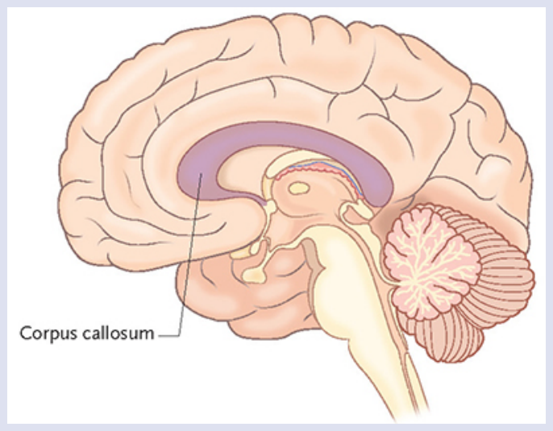
Hình 3.9 Hình minh họa não bộ cho thấy thể chai (corpus callosum).
Đôi khi cây cầu này phải bị cắt đứt. Trong những tình trạng như động kinh nặng, các bác sĩ phẫu thuật thần kinh sẽ cắt thể chai để hai bán cầu não không còn giao tiếp được với nhau nữa. Ca phẫu thuật này có thể làm giảm các cơn co giật, nhưng nó cũng có thể dẫn đến hàng loạt thay đổi về hành vi và nhận thức, chẳng hạn như sự thay đổi về thị giác, lời nói và trí nhớ. Đây được coi là phẫu thuật giải pháp cuối cùng, chỉ dành cho những bệnh nhân không còn lựa chọn điều trị nào khác.
Vậy, tại sao một số người lại sáng tạo hơn hoặc có tư duy phân tích hơn? Các nhà khoa học thần kinh không biết chắc, nhưng điều đó có thể liên quan đến cách các nhóm tế bào thần kinh giao tiếp với nhau.
THÙY ĐỈNH
Thùy đỉnh nằm gần phía sau và đỉnh của não bộ, và chuyên xử lý thông tin cảm giác như vị giác, xúc giác, nhiệt độ, đau và áp lực (Garcia-Larrea và Mauguière, 2018). Nó cũng tích hợp thông tin cảm giác này với hệ thống thị giác, điều này rất quan trọng để biết cơ thể đang ở đâu trong không gian, gọi là cảm thụ bản thể (proprioception) (Karnath, 1997; Olson và Berryhill, 2009). Còn được gọi là giác quan thứ sáu, cảm thụ bản thể đóng vai trò thiết yếu cho hầu hết mọi loại chuyển động. Một nghiên cứu cho thấy thể tích của thùy đỉnh có liên quan đến số giờ tập yoga hàng tuần. Những người tập yoga thường xuyên hơn có thùy đỉnh lớn hơn những người tập ít thường xuyên hơn (Villemure và cộng sự, 2015).
THÙY CHẨM
Thùy nhỏ nhất, thùy chẩm, nằm ở tận phía sau của não bộ và là nơi đặt trung tâm xử lý thị giác chính, vỏ não thị giác sơ cấp. Thùy chẩm nằm cách xa mắt, vì vậy não bộ đã tiến hóa để có hàng triệu sợi trục (chất trắng) kéo dài từ mắt đến thùy chẩm. Thùy chẩm tích hợp thông tin từ mắt để tạo thành một hình ảnh thống nhất với các thông tin về ánh sáng, kết cấu, màu sắc, kích thước, hình dạng và khoảng cách.
Bên dưới thùy chẩm là hai cấu trúc quan trọng khác gọi là tiểu não (cerebellum) và thân não (brainstem) (Hình 3.10). Tiểu não, có nghĩa là “bộ não nhỏ” trong tiếng Latin, tham gia vào việc điều phối các chuyển động, trí nhớ cơ bắp (như chuỗi Chào Mặt Trời), hiệu chỉnh chuyển động (những cử động nhanh để tránh bị vấp ngã) cũng như hàng loạt chức năng khác mà các nhà khoa học thần kinh mới chỉ bắt đầu giải mã. Mặc dù về mặt vật lý nhỏ hơn vỏ não, tiểu não chứa số lượng tế bào thần kinh nhiều gấp khoảng năm lần, được xếp dày đặc vào không gian nhiều nếp nhăn này (Von Bartheld, Bahney và Herculano-Houzel, 2016).
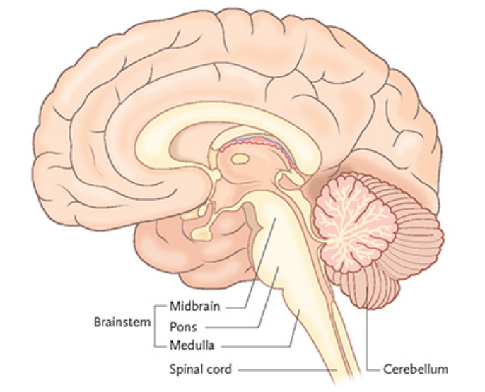
Hình 3.10 Hình minh họa não bộ cho thấy thân não, tiểu não và tủy sống.
Phỏng theo: https://qbi.uq.edu.au/brain/brain-anatomy/hindbrain
Thân não điều hòa nhiều chức năng quan trọng, chẳng hạn như nhịp thở, nhịp tim, huyết áp, ý thức và chu kỳ ngủ–thức. Thân não bao gồm ba phần chính gọi là não giữa (midbrain), cầu não (pons) và hành não (medulla oblongata), thường được gọi tắt là “medulla”. Thiền định lâu dài đã được chứng minh là làm tăng mật độ của thân não, đặc biệt là ở các vùng liên quan đến việc kiểm soát tim và phổi (Vestergaard-Poulsen và cộng sự, 2009). Những thay đổi cấu trúc não này có thể giải thích cho sự gia tăng hoạt động của hệ thần kinh phó giao cảm vốn thường đi kèm với thiền định.
Thân não cũng là nơi xuất phát của hầu hết các dây thần kinh sọ của não bộ. Mỗi dây thần kinh sọ có một vai trò cụ thể trong việc truyền tải thông tin vận động và/hoặc cảm giác xung quanh vùng đầu và cổ (Hình 3.11).
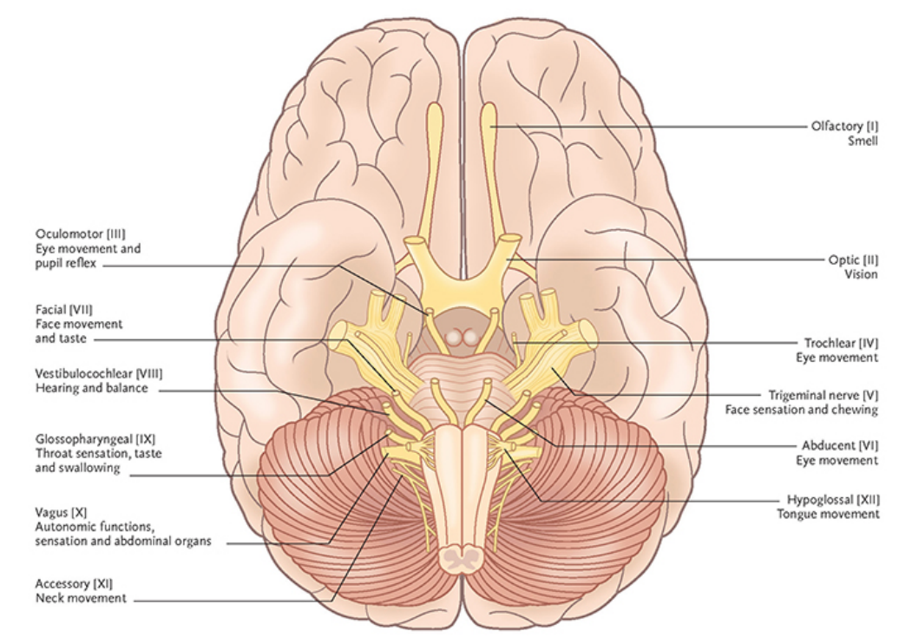
Hình 3.11 Hình minh họa não bộ cho thấy các dây thần kinh sọ.
Não giữa là phần trên cùng của thân não và tham gia vào việc kiểm soát chuyển động, giấc ngủ, điều hòa thân nhiệt, thị giác và thính giác. Nó chứa trung tâm sản xuất dopamine chính gọi là chất đen (substantia nigra).
Cầu não nằm giữa não giữa và hành não. Cấu trúc phình to này lấy tên từ từ tiếng Latin có nghĩa là “cây cầu” vì nó đóng vai trò là trung tâm điều phối cho các tín hiệu đi đến và đi từ cả hai bên não cũng như tủy sống. Cầu não chứa các nhóm tế bào thần kinh tham gia vào giấc ngủ, hô hấp, giữ thăng bằng và nhiều chức năng khác.
Hành não là phần thấp nhất của thân não, và đây là nơi não chuyển tiếp vào tủy sống. Mặc dù hành não ngắn, dài khoảng 3 cm (1 inch), nó là một cấu trúc tối quan trọng đối với sự sống còn của chúng ta. Nó chứa các trung tâm kiểm soát cho các chức năng sinh tồn, chẳng hạn như nhịp thở, nhịp tim và huyết áp. Vùng này cũng tham gia vào các phản xạ như nuốt và thậm chí cả hắt hơi (Seijo-Martinez và cộng sự, 2006; Hashimoto và cộng sự, 2018).
CÁC VÙNG NÃO BỔ SUNG LIÊN QUAN ĐẾN YOGA VÀ THIỀN ĐỊNH
Vỏ não đai (cingulate cortex) uốn cong quanh phần bên trong của não bộ giống như một chiếc cầu vồng (Hình 3.12). Nó được chia thành hai phần chính, vỏ não đai trước (phần phía trước) và vỏ não đai sau (phần phía sau).
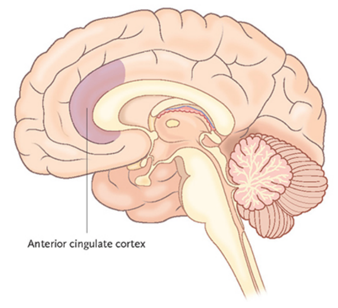
Hình 3.12 Hình minh họa não bộ cho thấy vỏ não đai trước.
Vỏ não đai trước (ACC) đặc biệt liên quan đến những người tập yoga vì nó kết nối với hệ thống cảm xúc của não (hệ viền - limbic system) cũng như thùy trán chịu trách nhiệm ra quyết định. ACC giúp tích hợp suy nghĩ và cảm xúc để phục vụ việc học tập cảm xúc cũng như theo dõi sự tập trung trong các hoạt động như thiền định (Devinsky, Morrell và Vogt, 1995).
ACC thường gắn liền với những tác động của thiền định. Thiền định có thể làm tăng hiệu quả của vùng này, cải thiện lưu lượng máu và tạo ra những thay đổi ở sợi trục (Tang và cộng sự, 2010, 2015; Xue, Tang và Posner, 2011). Một số nhà nghiên cứu đưa ra giả thuyết rằng những thay đổi ở các vùng não này có thể dẫn đến khả năng điều hòa cảm xúc và sự chú ý tốt hơn.
Thùy đảo hay vỏ não đảo (insula/insular cortex) gần đây đã trở thành tâm điểm chú ý trong các nghiên cứu về thiền định (Hình 3.13). Các nhà khoa học tin rằng nó chịu trách nhiệm cho sự tự nhận thức và tự suy ngẫm, vì nó cảm nhận trạng thái bên trong của cơ thể (Modinos, Ormel và Aleman, 2009).
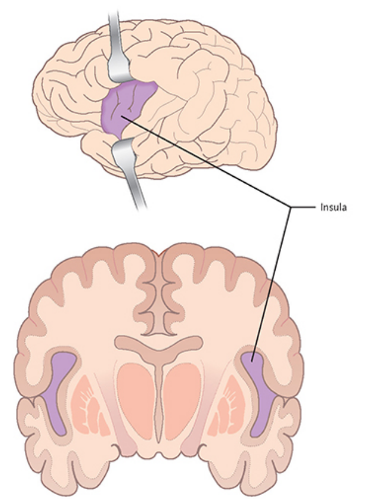
Hình 3.13 Hình minh họa não bộ cho thấy thùy đảo hay vỏ não đảo.
Nhiều nghiên cứu đã phát hiện ra rằng những người tập yoga có thể tích thùy đảo (chất xám) lớn hơn những người không tập yoga. Kích thước của thùy đảo cũng liên quan đến số năm kinh nghiệm tập yoga; những người tập yoga trong thời gian dài hơn có nhiều chất xám ở vùng này hơn so với những người tập ít kinh nghiệm hơn (Villemure và cộng sự, 2013).
Một cách khác để khám phá não bộ là quan sát các sợi trục của tế bào thần kinh gọi là chất trắng. Việc kiểm tra chất trắng rất hữu ích để hiểu cách các vùng khác nhau của não kết nối với nhau. Các nhà nghiên cứu từ Viện Y tế Quốc gia Hoa Kỳ (NIH) đã quan tâm đến sự khác biệt của chất trắng trong thùy đảo ở những người tập yoga lâu năm so với nhóm đối chứng khỏe mạnh (Villemure và cộng sự, 2013). Những người tập lâu năm cho thấy khả năng kết nối giữa vùng trước (anterior) và vùng sau (posterior) của thùy đảo cao hơn so với các đối tượng đối chứng. Yoga đòi hỏi nhận thức về tâm trí và cơ thể, vì vậy việc thực hành này có thể đang làm thay đổi thùy đảo để thúc đẩy sự giao tiếp hiệu quả, giúp sự nhận thức và tự suy ngẫm trở nên dễ dàng tiếp cận hơn.
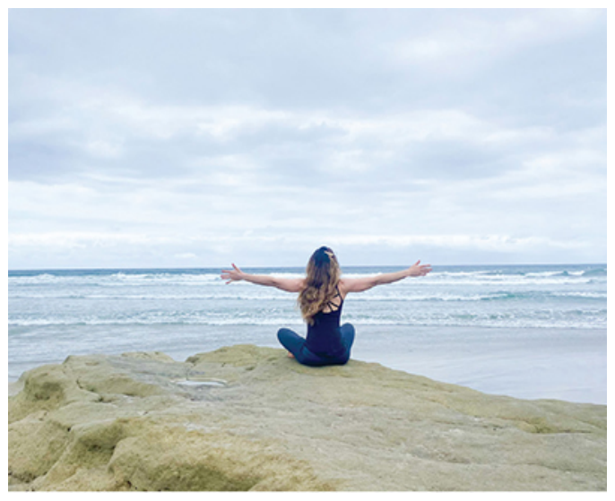
Hình 3.14 Thiền tâm từ (loving-kindness meditation) rèn luyện não bộ nuôi dưỡng lòng trắc ẩn, sự tha thứ và chấp nhận bản thân.
Thùy đảo cũng tham gia vào cảm giác đồng cảm, và người ta tin rằng nó được kích hoạt trong quá trình thực hành thiền tâm từ (LKM) (Singer, Critchley và Preuschoff, 2009). LKM là một kỹ thuật thiền phổ biến được sử dụng để nâng cao sức khỏe tinh thần và giảm căng thẳng (Hình 3.14). Nó rèn luyện não bộ nuôi dưỡng lòng trắc ẩn, sự tha thứ và chấp nhận bản thân. Trong khi thực hành LKM, người thiền tập trung vào việc mang lại năng lượng yêu thương, tử tế cho người khác hoặc cho chính mình. Mặc dù kỹ thuật này có thể khó thành thạo, nó có thể thúc đẩy khả năng điều hòa cảm xúc và quản lý căng thẳng tốt hơn (Grossman và Van Dam, 2011).
Thiền tâm từ Đưa bản thân vào một tư thế thoải mái. Hãy bắt đầu bằng cách nuôi dưỡng lòng từ ái dành cho một người bạn hoặc thành viên trong gia đình.
Một người mà bạn yêu thương. Hãy nghĩ về mong muốn của bạn để họ được hạnh phúc.
Một sự mở lòng tự nhiên hướng ra bên ngoài. Lắng nghe cơ thể bạn và cảm giác của bạn ngay trong khoảnh khắc này.
Hiện diện ở đây và ngay lúc này. Hãy để những cảm xúc lắng đọng lại.
Bây giờ, hãy bắt đầu tập trung trở lại vào người thân yêu đó.
Cố gắng hình dung diện mạo của họ.
Cảm nhận mùi hương của họ. Nhớ lại cách họ cử động cơ thể.
Cảm nhận họ, nhìn thấy họ. Bây giờ, hãy chú ý đến cảm giác bên trong bạn.
Bắt đầu nuôi dưỡng sự ấm áp đó.
Bạn có đang mỉm cười không? Hạnh phúc là một cảm giác tự nhiên. Hãy đưa người thân yêu đó trở lại tâm trí bạn.
Chúc họ bình an và gửi tình yêu thương đến họ. Mong bạn được hạnh phúc, khỏe mạnh và bình yên. Cảm nhận lòng từ ái lan tỏa từ chính bạn.
Cảm nhận sức mạnh nội tại và ngọn lửa bên trong bạn. Hãy tưởng tượng việc lan tỏa niềm vui và hạnh phúc đến người thân yêu của bạn.
Mong tất cả chúng ta đều được trải nghiệm niềm vui và hạnh phúc.
Những điểm chính cần ghi nhớ
Mặc dù não bộ dựa vào sự phối hợp hoạt động của nhiều vùng khác nhau để vận hành, chúng ta đã biết rằng một số khu vực chịu trách nhiệm cho phần lớn các chức năng nhất định (Hình 3.15). Các nghiên cứu khoa học đã liên kết việc thực hành yoga và thiền định với những thay đổi ở hầu hết mọi vùng của não bộ.
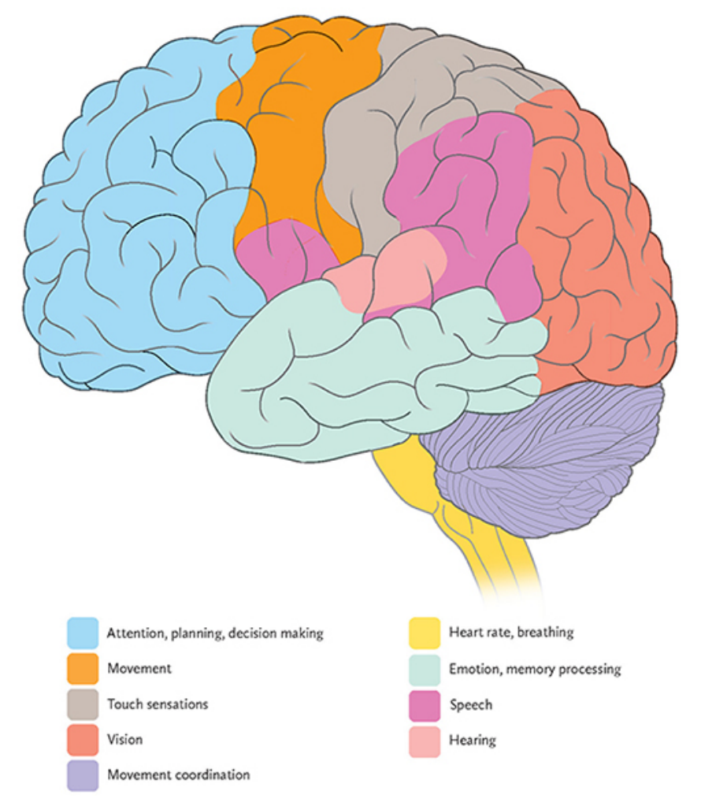
Hình 3.15 Các vùng của não bộ và chức năng của chúng.
TÀI LIỆU THAM KHẢO
Afonso, R.F., Balardin, J.B., Lazar, S., Sato, J., et al., 2017. Greater cortical thickness in elderly female yoga practitioners: a cross-sectional study. Frontiers in Aging Neuroscience, 9, p.201. Annese, J., Schenker-Ahmed, N.M., Bartsch, H., Maechler, P., et al., 2014. Postmortem examination of patient H.M.’s brain based on histological sectioning and digital 3D reconstruction. Nature Communications, 5(1), p.3122.
Chayer, C., & Freedman, M., 2001. Frontal lobe functions. Current Neurology and Neuroscience
Reports, 1(6), pp.547–552. Chow, T.W., 2000. Personality in frontal lobe disorders. Current Psychiatry Reports, 2(5), pp.446–
451. Costandi, M., 2012. Snapshots explore Einstein’s unusual brain. Nature. https://doi.org/10.1038/nature.2012.11836. Devinsky, O., Morrell, M.J., & Vogt, B.A., 1995. Contributions of anterior cingulate cortex to behaviour. Brain, 118(1), pp.279–306. Eichenbaum, H., Yonelinas, A.P., & Ranganath, C., 2007. The medial temporal lobe and recognition memory. Annual Review of Neuroscience, 30(1), pp.123–152. Garcia-Larrea, L., & Mauguière, F., 2018. Pain syndromes and the parietal lobe. Handbook of
Clinical Neurology, 151, pp.207–223. Gothe, N.P., Hayes, J.M., Temali, C., & Damoiseaux, J.S., 2018. Differences in brain structure and function among yoga practitioners and controls. Frontiers in Integrative Neuroscience, 12, p.26. Gotink, R.A., Vernooij, M.W., Ikram, M.A., Niessen, W.J., et al., 2018. Meditation and yoga practice are associated with smaller right amygdala volume: The Rotterdam Study. Brain Imaging and Behavior, 12(6), pp.1631–1639. Grossman, P., & Van Dam, N.T., 2011. Mindfulness, by any other name…: Trials and tribulations of
Sati in western psychology and science. Contemporary Buddhism, 12(1), pp.219–239. Hashimoto, K., Sugiyama, Y., Fuse, S., Umezaki, T., et al., 2018. Activity of swallowing-related neurons in the medulla in the perfused brainstem preparation in rats. The Laryngoscope, 129(2), e72–e79. Herculano-Houzel, S., Avelino-de-Souza, K., Neves, K., Porfírio, J., et al., 2014. The elephant brain in numbers. Frontiers in Neuroanatomy, 8, p.46. Karnath, H.O., 1997. Spatial orientation and the representation of space with parietal lobe lesions.
Philosophical Transactions of the Royal Society of London. Series B: Biological Sciences, 352(1360), pp.1411–1419. Knecht, S., Dräger, B., Deppe, M., Bobe, L., et al., 2000. Handedness and hemispheric language dominance in healthy humans. Brain, 123(12), pp.2512–2518. Lerch, J.P., Pruessner, J.C., Zijdenbos, A., Hampel, H., Teipel, S.J., & Evans, A.C., 2004. Focal decline of cortical thickness in Alzheimer’s disease identified by computational neuroanatomy. Cerebral Cortex, 15(7), pp.995–1001. Modinos, G., Ormel, J., & Aleman, A., 2009. Activation of anterior insula during self-reflection.
PLoS ONE, 4(2), e4618. Olson, I.R., & Berryhill, M., 2009. Some surprising findings on the involvement of the parietal lobe in human memory. Neurobiology of Learning and Memory, 91(2), pp.155–165. Phillips, K.A., Stimpson, C.D., Smaers, J.B., Raghanti, M.A., et al., 2015. The corpus callosum in primates: processing speed of axons and the evolution of hemispheric asymmetry. Proceedings of the Royal Society B: Biological Sciences, 282(1818), p.20151535. Reber, P.J., 2008. Cognitive neuroscience of declarative and nondeclarative memory. Advances in
Psychology, 139, pp.113–123. Sacks, O., 2022. The Man Who Mistook His Wife for a Hat. London: Picador. Seijo-Martinez, M., Varela-Freijanes, A., Grandes, J., & Vázquez, F., 2006. Sneeze related area in the medulla: localisation of the human sneezing centre? Journal of Neurology, Neurosurgery & Psychiatry, 77(4), pp.559–561. Singer, T., Critchley, H.D., & Preuschoff, K., 2009. A common role of insula in feelings, empathy and uncertainty. Trends in Cognitive Sciences, 13(8), pp.334–340.
Squire, L.R., Stark, C.E.L., & Clark, R.E., 2004. The medial temporal lobe. Annual Review of
Neuroscience, 27(1), pp.279–306. Tang, Y.-Y., Lu, Q., Geng, X., Stein, E.A., Yang, Y., & Posner, M.I., 2010. Short-term meditation induces white matter changes in the anterior cingulate. Proceedings of the National Academy of Sciences, 107(35), pp.15649–15652. Tang, Y.-Y., Lu, Q., Feng, H., Tang, R., & Posner, M.I., 2015. Short-term meditation increases blood flow in anterior cingulate cortex and insula. Frontiers in Psychology, 6, p.212. Van Aalst, J., Ceccarini, J., Demyttenaere, K., Sunaert, S., & Van Laere, K., 2020. What has neuroimaging taught us on the neurobiology of yoga? A review. Frontiers in Integrative Neuroscience, 14, p.34. Vestergaard-Poulsen, P., van Beek, M., Skewes, J., Bjarkam, C.R., et al., 2009. Long-term meditation is associated with increased gray matter density in the brain stem. NeuroReport, 20(2), pp.170– 174. Villemure, C., Ceko, M., Cotton, V.A., & Bushnell, M.C., 2013. Insular cortex mediates increased pain tolerance in yoga practitioners. Cerebral Cortex, 24(10), pp.2732–2740. Villemure, C., Ceko, M., Cotton, V.A., & Bushnell, M.C., 2015. Neuroprotective effects of yoga practice: age-, experience-, and frequency-dependent plasticity. Frontiers in Human Neuroscience, 9, p.281. Von Bartheld, C.S., Bahney, J., & Herculano-Houzel, S., 2016. The search for true numbers of neurons and glial cells in the human brain: a review of 150 years of cell counting. Journal of Comparative Neurology, 524(18), pp.3865–3895. Xue, S., Tang, Y.-Y., & Posner, M.I., 2011. Short-term meditation increases network efficiency of the anterior cingulate cortex. NeuroReport, 22(12), pp.570–574.